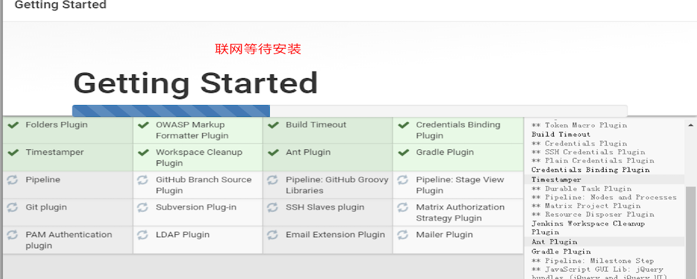

Jenkins安装于配置
学习目标
- 掌握jenkins的安装和配置
1. Jenkins介绍
Jenkins是一个开源软件项目，是基于Java开发的一种持续集成工具，用于监控持续重复的工作, 旨在提供一个开放易用的软件平台，使软件的持续集成变成可能.
2. 安装
2.1 jar包的方式安装
安装要依赖于java环境,必须首先在系统中安装jdk1.5版本以上, 并且配置在系统环境变量中.
安装方式:
- 下载jenkins.jar
- 移动到要安装的目录,执行java -jar jenkins.war
- 代开浏览器输入: localhost:8080
2.2 源码包安装
点击下一步,直到安装完成,会自动打开页面, 若没有打开,需要手动打开浏览器输入: localhost:8080
- 进入默认密码提示文件,输入系统默认的密码:
点击确定保存密码, 然后可以看到让安装插件


设置用户信息

启动后,点击开始使用jenkins, 进入首页